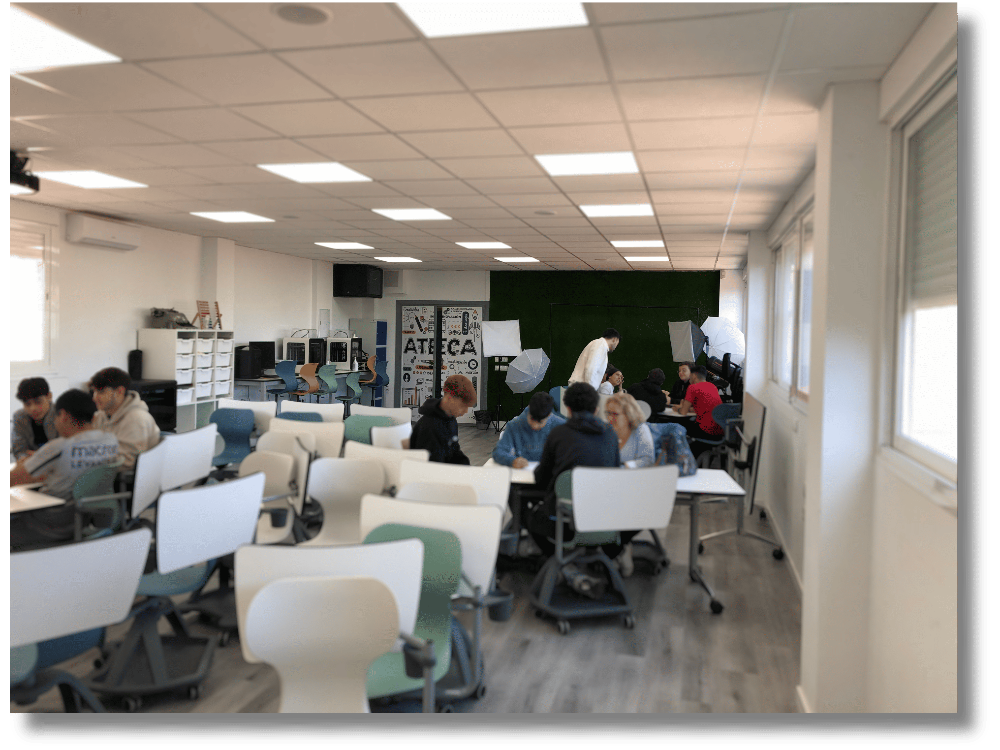

Icónica herradura
 En la confección del logo de LA HERRADURA, partimos de la idea de que la imagen debía ser tan simbólica como narrativa: una herradura que reflejara a la vez la suerte, el paso del tiempo y el esfuerzo. Empezamos con una paleta de colores cálidos, inspirada en el metal oxidado de una herradura real—tonos marrones, anaranjados suaves y un ligero matiz dorado, que junto al negro o gris profundo, aportan contraste y fuerza visual.
En la confección del logo de LA HERRADURA, partimos de la idea de que la imagen debía ser tan simbólica como narrativa: una herradura que reflejara a la vez la suerte, el paso del tiempo y el esfuerzo. Empezamos con una paleta de colores cálidos, inspirada en el metal oxidado de una herradura real—tonos marrones, anaranjados suaves y un ligero matiz dorado, que junto al negro o gris profundo, aportan contraste y fuerza visual.
El boceto inicial fue sencillamente a mano, experimentando con contornos irregulares para darle un carácter “hecho por nosotros”, cercano y auténtico. Luego, digitalizamos la forma, manteniendo la textura rugosa y añadiendo un ligero degradado que simula el desgaste del metal. Este efecto aporta realismo y conecta con la temática de la película: la herradura como símbolo de un hallazgo descubierto gracias al esfuerzo y no solo por casualidad.
Para la versión invertida, utilizamos los mismos tonos pero en negativo visual: un fondo claro (casi blanco o beige) que contrasta con la forma de la herradura en tonos oscuros y cálidos. Esta alternativa permite que el logo sea funcional en diferentes soportes (impresos claros o fondos oscuros) sin perder su identidad.
El alumnado diseñó un pequeño boceto por grupos de trabajo que luego perfiló a través de la herramienta de diseño gráfico Canva.
A continuación se ve una clase de alumnos trabajando en el diseño y seguidamente un vídeo de la creación del logo a velocidad 10x (editado con Capcut).

Alumnado del IES Mare Nostrum. Trabajando en el logo de la película (CC BY-SA)